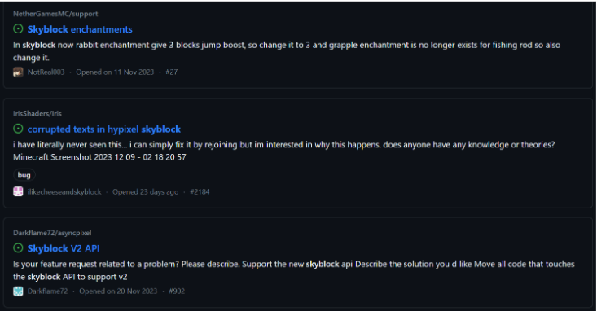
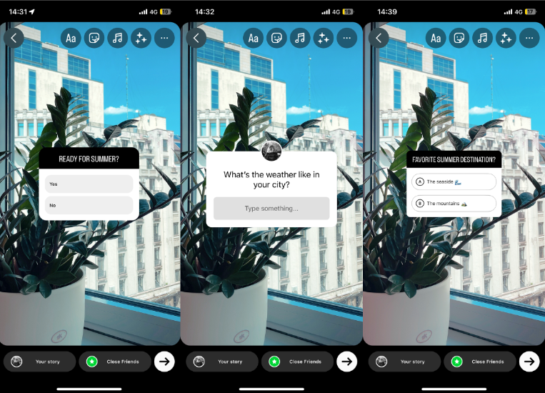
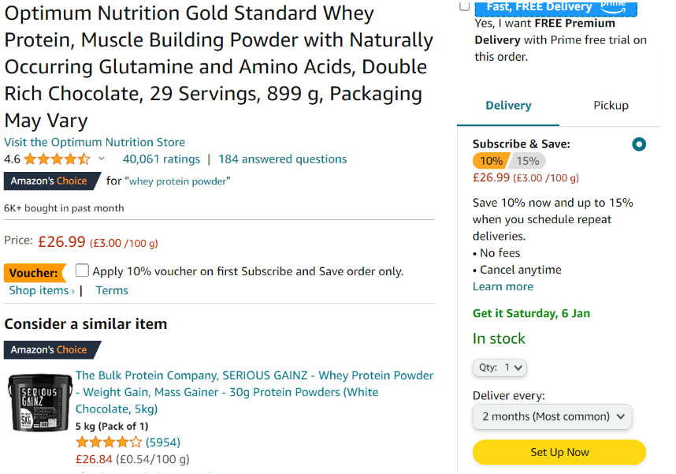
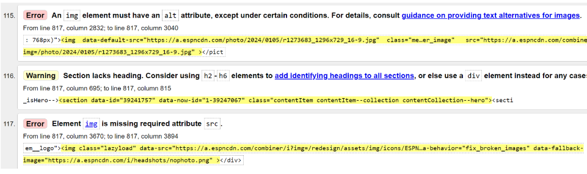
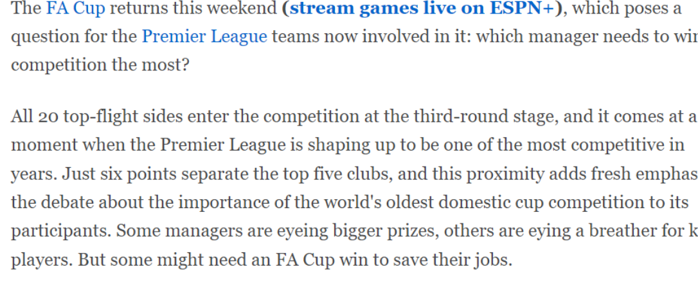

Section 1: Usability, UX, and design principles
Github
GitHub is a digital space supporting code management and collaboration for developers. It aims to enhance teamwork and code efficiency by offering tools for hosting, reviewing, and managing projects. GitHub encourages open-source contributions, facilitating a global community for sharing and improving code. The platform strives to advance programming collaboration, fostering innovation and knowledge exchange, as anyone with an account is able to upload work to the database and ask for direct help. This establishes communities supporting creativity which ensures growth of the platform as more people will attend, as in need of help with their projects. Providing help within a community can lead to enhancing the sociable side of the platform but also be pleasurable as positive human interaction can lighten your mood while being helpful to others. Drawbacks of the website could be as hard to learn as having skills within coding helps navigate the website and when uploading your work, although due to the helpful community this can easily be figured out as videos are displayed, and comment sections that provide tips or opinions on matters.

As displayed, people can input problems they have found and highlight where the mistake has been made making it very error tolerant as people will now be able to go back on their mistakes and make the changes that are needed. All these features are what makes github a working platform and community as allowing a social area to recur helping each other and being fun and engaging for the users as they continue to use their knowledge to help one another.
Another usability feature is the effectiveness of the software as a simple design is indicated within the image that allows to highlight the area of the problem and text that explains the issues.
Section 2: Heuristic evaluation
Github
Github allows for an easy alternative to create templates of banners, logos, cv’s, menus and other features that would normally require having skills in graphics designs, although already giving us this aspect, and giving the option to make it our own. Yes, the dialogue is clear. For example, upon choosing one of the food menu templates, elements of the template are identifiable by users by simply hovering. Giving the user the freedom and flexibility to edit as they deem fit. Matches between the system and the real world are displayed through simple logos and are identified next to different tools that summarize the feature, title and description on what the changes will do, playing videos all so on the impact if any more help is needed.
The user has control from initiation, saving and exporting. At no point is the user held hostage to a page. With a fixed menu bar at the top, users can jump back to the menu page and start afresh.The dialogue is consistent allowing confirming with the user and changes that are done to the design, auto saves are enabled, and notifications will appear that help identify what tools will do and summaries future changes when saving work or importing. Previous saves are enabled meaning that you can back paddles if making mistakes, also the common feature of control z, is programmed in order to go back to the most recent edit and fast forwarding.
While the flexibility and efficiency of use is nearly perfect as you are what holds the website back, the creation standpoint is down to you, although needing more advanced mechanics could be an option in order to add a more detailed approach, due to being a free software some apps like photoshop allow for bigger customisation although don't offer the support in which this website holds, being the meaning for how popular and value it holds. Support is at the bottom right of any document lies a “?” icon that allows users to inquire about certain steps and capability that the site has. Simple logos are identified next to different tools that summarize the feature, title and description on what the changes will do, playing videos all so on the impact if any more help is needed. At the home page there is a dedicated link called “Learn” to help users not only navigate the site but also improve their design fundamentals.
Section 3: Psychology principles and UX laws
Instagrams interface introduces the Hicks law allowing for a shortage of interaction time and is immediately introduced with content that can keep you entertained. Recommendations within the search bars are supplied as they use your data from who you follow and other feeds that you may like in order to reduce the searches for content that you may find pleasing. This is a key indicator to grab the users attention. Another example for this is the infinite scroll that is applied to continually feed you with information, making the interaction time instant and can also be attached to the gestalts principle that explains that people are attracted to patterns of simulation. Continuously moving your eyes through the content one piece to another will allow you to gain attachment and instagram has added interaction that could emit stimulation into your brain making you more addicted (Destino, A. (n.d.). ThThe effects of cognitive stimulation of Instagram on anxiety, fear of missing out, memory, and self- esteem. Lynchburg.edu. From https://digitalshowcase.lynchburg.edu/cgi/viewcontent.cgi?article=1124&context=utcp ).
Tesla's law is the principle that there is a certain amount of complexity which cannot be reduced in order to make the fact more simple the burden is shifted towards the developers side to make the process easier. This could relate to making tools that provide more effective and efficient methods to solutions. Instagram have done this by enabling filters and cool stickers to images, this process alone is hard for the user to do but has been made similar by the back end. The process alone reduces time for the customer making the process efficient also connecting to another law.
Fitts law examines the point to acquire the target by its distance and size and how noticeable it is, the buttons should easily be accessible and grouped/categories to cause less frustration. When creating stories or posts on instagram these buttons are displayed in the corners of the screen to show your photo as a canvas. Buttons noticeable and understanding of the feature they hold by their images being spaced perfectly so that you can click them without accidentally touching other buttons and being error tolerant if so. All features are displayed and help the user to create to their needs.

Section 4: Persuasive Technologies and Behavioural Change
Amazon + Google
Amazon is a company that uses dark patterns, the technique in which they use is called confirm shaming. This is a play of deception that makes people sign up towards a product in order to receive something e.g. money off (guilt charged manipulation). This is heavily used in the perception of buying medication, or formulas that will be needed to take on a daily consumption, that require you to continue taking.

As shown, you can only purchase the item with a subscription based that heavily discounts the item and allows for a longer period until the next purchase in order to make the consumer forget to cancel the payment. Deception is at play here making a subscription the only course of option, this could be difficult for older consumers as they dont have the technological knowledge to cancel these subscriptions and will be continuously charged until getting help which is sometimes troublesome.
Privacy zuckering is another dark pattern that tricks the user into displaying more information than needed and can use this to gather information. Zuckering is chosen as the name due to the owner of facebook commonly known for using information on social media platforms against its users. Google has been claimed to be ‘zuckering’ and has faced scrutiny and criticism in the past regarding its privacy practices, particularly related to data collection and advertising. Not having photo evidence but the fact is that you can use your google account as a quick point of access to all company accounts, receiving emails and saving information such as bank details can be discovered by data breaches and how all your data can be used to customize searches with no filter to how deep this search goes. All your information is stored within your google data, knowing location, birth, address all being stored within this staple point.
Section 5: Accessibility and Universal Design
ESPN
blog contentUniversal design highlights the key indications for a website to work and make sure that they follow the procedures of the product or service being accessible to everyone, without the optimisation or special designs needed.
ESPN.com is the key focus for the accessibility audit checklist as shown to not have some elements that have not been considered properly. When passing through the technical compliance it shows some waring through the W3C validator although being able to load properly it looks as some content is disabled and doesn't work and the page uses link as a way to bridge to other content, some link are at fault or have been taken down meeting that some data cant be accessed making it not accessible. In order to solve this, regular check ups or updates on previous articles should be done to make sure that everything is accessible. Also some pages are missing the valid metadata to describe the content as no titles are displayed. This doesn't help with the procedure of consent as all images are needed to have alt text to be considered accessible as shown below of the error.

The navigation is not thorough enough as well, simple features such as backpedaling and not enabling all content is implied through link switching that takes you to other pages and doesn't totally work with the keyboard as having to click to switch pages. Some plusses are that the navigation heading is the same on all pages and gives you the option to see new content with recommended tabs.
Controls are not optimized enough for accessibility to people with bad vision as the Size of text is not increased when switching the different screen sizes making it harder for the user to read. When also switching to 200 % zoom nothing is changed except from the amount of content in which you can see, being optimized to the side.
From other visual stand points it has successfully passed the check as the common sans serif font is used through changing slightly in optimizely to show importance as shown in the image below. Color contrasts are considered as just going for the white and black screens although may not be considered for people with dyslexia as they will find it harder to read.

References
- (Destino, A. (n.d.). ThThe effects of cognitive stimulation of Instagram on anxiety, fear of missing out, memory, and self- esteem. Lynchburg.edu.
From https://digitalshowcase.lynchburg.edu/cgi/viewcontent.cgi?article=1124&context=utcp ).